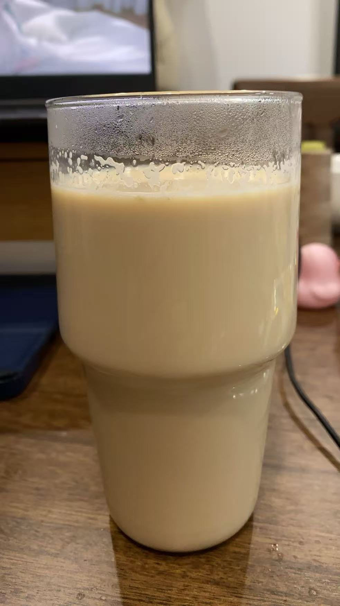

Lera's cooking recipes
Lera loves making her own food. She is now skilled at making milk tea, flatbreads(in Chinese it called Bing), dumplings, and all kinds of simple meals. Lera is still learning.
Beverage
Right now Lera knows how to make lattes and milk tea.
Instructions:
Lattes:
- pour coffee concentrate into a cup (since Lera doesn't have coffee beans or a coffee machine).
- whisk it with a frother until it's rich and creamy.
- pour in milk and ice.
Milk tea:

- Heat a small pot first, and once it's hot, add the tea leaves.
- Add a small spoonful of white sugar (adjust to your taste. This recipe makes lightly sweetened milk tea). Once the sugar melts, stir-fry it together with the tea leaves.
- Add an appropriate amount of water to the pot to make a pot of tea broth.
- Once the tea broth comes to a boil, add the milk.
- Turn the heat to low and wait for the milk to come to a boil.